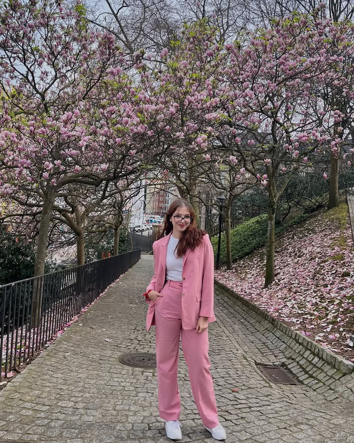
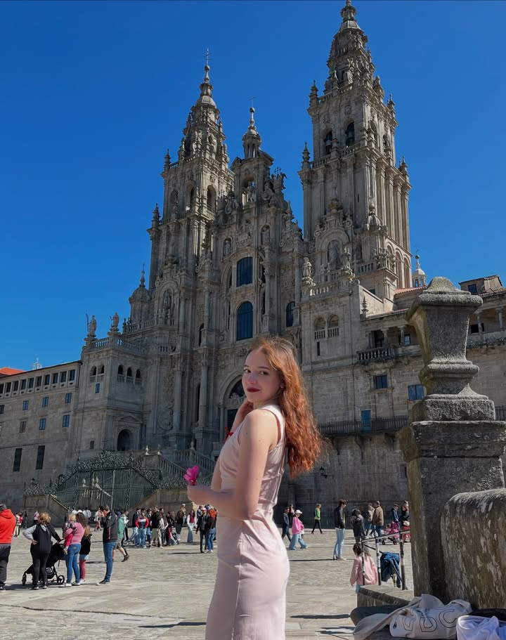
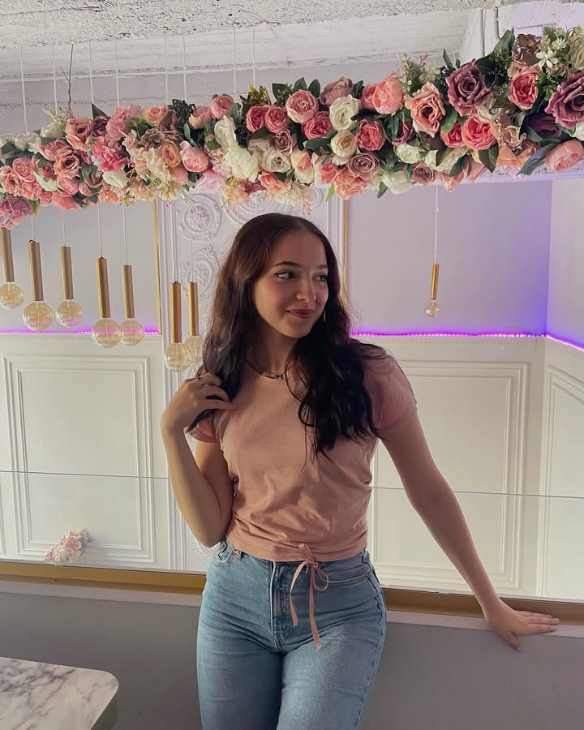

Ioana Șalaru este studentă la Facultatea de Automatică și Calculatoare din cadrul TUIASI.
Ioana are vârsta de 21 de ani și locuiește la cămin în Campusul Tudor Vladimirescu Iași.
Puteți găsi mai multe informații despre cariera Ioanei pe profilul ei de LinkedIn: Ioana Șalaru | LinkedIn



Ioana este pasionată de programare și de dezvoltarea de aplicații web. În timpul liber, îi place să:
| 1. | Asculte muzică |
| 2. | Călătorească |
| 3. | Citească |
| 4. | Gătească |
Bineînțeles, veți afla mai multe informații despre Ioana navigând pe acest site sau abonându-vă la newsletterul ei.
Acum vom vedea clasamentul melodiilor cele mai ascultate de Ioana luna aceasta.
Puteți vedea toate melodiile ascultate de Ioana în playlistul ei de Spotify: https://open.spotify.com/playlist/5172345678901234567890